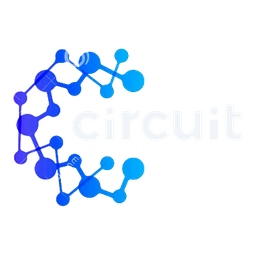

CircuitLab
Laboratorio de circuitos y robótica
guardado
📁
Archivo
▾
↶
↷
🔍
Analizar
🎓
Aprender
▾
Circuito
Componentes
🔑
Entrar
🔊
🌙
☰
＋
−
⤢
⬚
⟳
⧉
🎨
🗑️
▦
🔗
⚬
🏷️
⚡
🔎
📈
📄
PDF
⬇
Descargar CSV
Código
▶
Iniciar simulación
›
Inspector
‹
Componentes
Mensajes
Monitor Serie
Informe
Osciloscopio
Limpiar
▾
Componentes del circuito
—
🎨 Personalizar
Actualizar
Arduino Uno
Editor de código
Código
Bloques
Plantillas
Verificar
✕
1
Mi programa
Vaciar
Código generado
Curso
✕
📄
Nuevo
📂
Abrir
💾
Guardar
💿
Guardar como…
🎓
Modo libre
📚
Curso
🧪
Ejemplos
🎯
Ejercicios
⏱️
Retos
🏫
Aula
👨🏫
Profesor
❔
Ayuda
03:00
Reto
🧩
0
⚠️
0
🔁
0
Comprobar
Salir